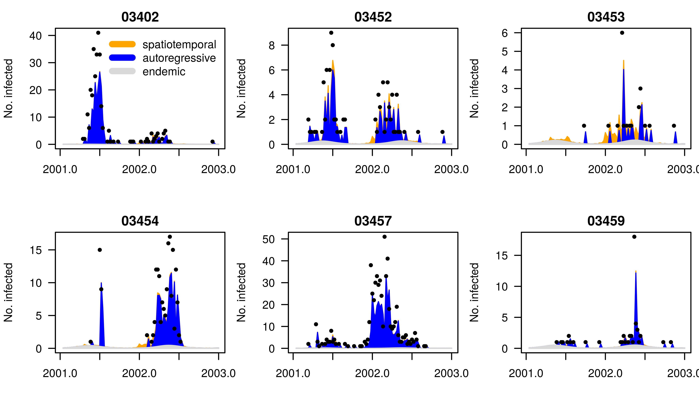
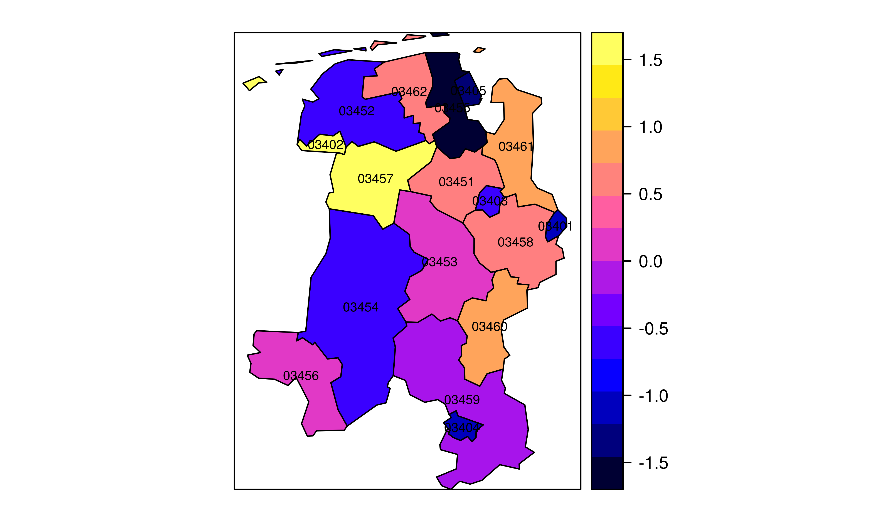
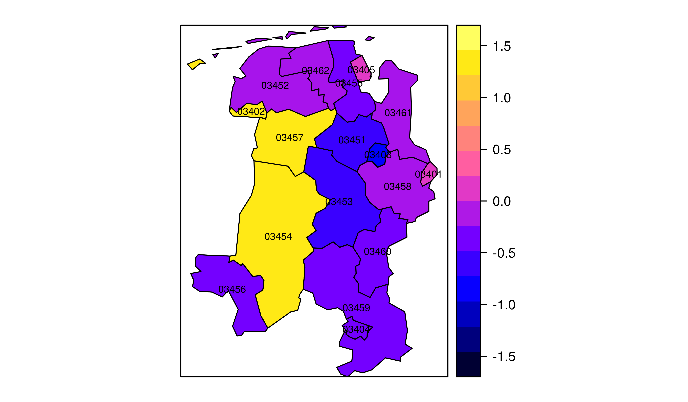
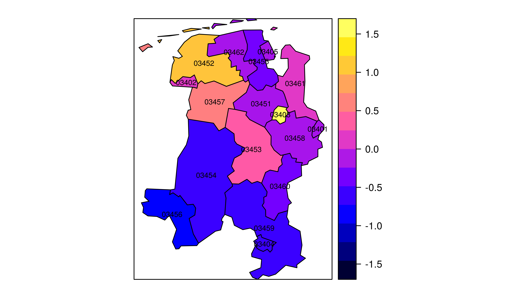

Chapter 4 Spatial-temporal Multicomponent Model
Welocome to the surveillance project again! 这是一篇针对Surveillance程序包中时空多成分模型( Spatial-temporal Multicomponent Model)的文章。时空多成分模型是surveillance程序包提供的四大分析模块之一(Outbreaks detection, Endemic-epidemic Spatio-temporal Point Process Intensity Model, SIR event history of a fixed population 和 Spatial-temporal Multicomponent Model)，自去年10月份开始接触，期间走了很多弯路(学习过程)，故将相关教训在此文中分享，希望对时空流行病学感兴趣的朋友能够尽快熟悉该模型并能应用于自己的数据。英文功底不错的建议阅读该程序包的英文说明文档。如果您发现此文中的错误，也恳请留言指出，在此特表感谢。
4.1 模型综述
时空多成分模型(Spatial-temporal Multicomponent Model)的简约版最初由Held et al. (2005)提出，并应用于麻疹疫情中[PS: 基于浙江省麻疹疫情已写了篇类似的文章，已投中华流行病学杂志]。Leonhard Held et al.(2006)在“A two-componet model for counts of infectious disease”一文中构建了随机双成分(相互独立)模型，包括局部特性成分(Endemic Component)和时间流行成分(Epidemic Component)，其中局部特性成分控制季节效应的影响，时间流行成分同时考虑了疾病疫情的时间相关性和暴发影响。该模型假设时序数据服从Generalised Branching Process with Immigration， 分别对甲肝和乙肝进行了拟合。在surveillance程序包中，基础模型中将时序数据分为三个成分：局部特性成分(Endemic component, end)、时间自相关成分(Autoregressive component，ar)和空间流行成分(Epidemic component, ne)，并在公式中分别用\(ν_(i,t)\)、\(λ_(i,t)\)和\(ϕ_(i,t)\)表示。其中局部特性成分反映疫情的本地风险情况，时间自相关成分反映的是过去时段疫情在时间维度上产生的影响，而空间流行成分反映的是邻近单元对目标单元产生的影响(可根据多种空间权重矩阵来定义邻近)。具体的公式如下：
\(γ_0\)、\(α_0\) 和 \(β_0\)分别代表了三成分的截距，\(γ_i\)、\(α_i\) 和 \(β_i\) 分别代表三成分的随机效应，都服从均值为0的正态分布；γ、α 和 β分别代表了协变量 \(z_(i,t)^T\)、\(μ_(i,t)^T\) 和 \(x_(i,t)^T\) 对局部特性成分、时间自相关成分和空间流行成分的作用强度。其中协变量\(z_(i,t)^T\)在本研究中包含了季节效应\({∑_(s=1)^S[κ_s sina(τ_s t)+δ_s cosa(τ_s t)]}\)，其中S代表周期数，\(τ_s=2πs/freq\)。
4.2 模型优点
surveillance程序包中的时空多成分模型相关优点主要体现在如下几个方面：
- 空间权重：多种方式定义研究单元的邻近性
- 协变量纳入：自变量反映局部和时序关系
- 随机效应：考虑区域的空间异质性
空间权重对空间分析影响较大，其设置方式是空间分析中老生常谈的话题。surveillance程序包除提高基本的空间权重矩阵外(如一阶queen邻近等，具体见spdep程序包)，还提供Power-law算法，能更好模拟传染病远距离传播的特性(在一定距离范围内快速递减)。
协变量纳入不仅可在控制其他效应后准确度量协变量和结局变量之间的关系，也能较高地提高模型拟合度(AIC)。协变量一般纳入局部特性成分或时间自相关成分，借以反映其在局部疫情风险和时序效果上的影响，当然，将协变量得系数恒设为1进而转变成offset。不管何种方式，都可以借助AIC值来选择最优拟合模型，尽管有研究表明将易感人群比例值纳入时间自相关成分效果较佳(见此文)。
在协变量不能完全反映研究单元的空间异质性时，随机效应能显著提高模型的预测精度。时空多成分模型中纳入随机效应最初由M. Paul and Held L(2010)提出，这极大提高了时空多成分模型的适用度。对于来自大疫情的传染病监测数据，无法观测的空间异质性主要体现在underreporting。而针对不同研究单元不同成分随机效应的可视化，可为卫生决策者提供较好的干预方向，若某区域麻疹的局部特性成分较大，则说明麻疹疫情的本地风险较大，进一步巩固本地免疫屏障则显得尤为重要。
4.3 具体实例
4.3.1 STS数据
surveillance程序包中提供hhh4函数来拟合时空多成分模型，其所需的数据格式为sts(surveillance time series)。sts数据需包括以下几个部分：疫情数据，人口数据，空间邻阶数据,地图数据或和协变量数据。可借助new函数生成sts数据，示例代码如下：
measlesWeserEms <- new("sts", start = c(2013, 1), freq =365, epoch = 1:nrow(dat.final),
observed = dat.final, neighbourhood = weserems_nbOrder,
map = dat.zj, populationFrac = populationFrac)此处，我的数据是逐日数据，因而freq设置为365，dat,final是疫情数据，dat.zj是地图数据，populationFrac是人口比例数据(研究单元人口占总研究单元人口数的百分比)。此处一定需注意各个数据集之间匹配问题，也就是变量名一定要一致(重要的事情不说三遍!!!)。对于空间邻阶文件，可通过spdep程序包中的poly2adjmat和nbOrder函数来生成，但需注意孤立区域，如浙江省的洞头县尽管从地图属性是孤立的，但考虑传染病的扩散特性，还是将其设置为与乐清市相邻。
4.3.2 数据可视化
对于sts数据，surveillance程序包提供了一系列简约的方式来进行数据可视化(时间和空间)。考虑到数据保密性，此处，仅利用程序包自带的measlesWeserEms数据集来实现数据可视化和模型拟合。时间序列可视化的部分代码如下：
library(surveillance)
data(measlesWeserEms)
measlesWeserEms15 <- measlesWeserEms[, colSums(observed(measlesWeserEms)) > 6]
plot(measlesWeserEms15, type =observed ~ time | unit, legend.opts = NULL)你可以调节type参数的值，如“observed ~ time”或“observed ~ unit”等来达到不同的可视化效果，需要注意的是其采用的是spplot和lattice绘图系统，若想调节图形相关参数的可查阅程序包的帮助文档。当然，也可以用ggplot2和gridExtra程序包，分别实现数据可视化和图形组合(推荐之至)。
4.3.3 模型拟合
此处先拟合基础模型，其包括三成分，其中各研究单元的人口比例值作为offset结合地域面积来反映人口密度，局部特性成分控制季节效应，时间流行成分和空间流行成分(一阶邻近)都只包括截距项。为控制研究区域疫情的过度离散特性，采用负二项分布(NegBin1)进行拟合，当然也可以选择p泊松分布(Possion)。相关代码如下：
measlesModel_basic <- list(
end = list(f = addSeason2formula(~1 + t, period = measlesWeserEms@freq),offset = population(measlesWeserEms)),
ar = list(f = ~1),ne = list(f = ~1, weights = neighbourhood(measlesWeserEms) == 1), family = "NegBin1")
measlesFit_basic <- hhh4(stsObj = measlesWeserEms, control = measlesModel_basic)
summary(measlesFit_basic, idx2Exp = 1:4, amplitudeShift = TRUE, maxEV = TRUE)##
## Call:
## hhh4(stsObj = measlesWeserEms, control = measlesModel_basic)
##
## Coefficients:
## Estimate Std. Error
## exp(ar.1) 0.645403 0.079270
## exp(ne.1) 0.015805 0.004200
## exp(end.1) 1.080248 0.278839
## exp(end.t) 1.001185 0.004264
## end.A(2 * pi * t/52) 1.164231 0.192124
## end.s(2 * pi * t/52) -0.634360 0.133500
## overdisp 2.013839 0.285441
##
## Epidemic dominant eigenvalue: 0.72
##
## Log-likelihood: -971.72
## AIC: 1957.44
## BIC: 1995.72
##
## Number of units: 17
## Number of time points: 103summary函数中idx2Exp是一个简单系数转换参数，此处是将系数中的ar.1，ne.1，end.1和end.t转换成其对数值，至于为什么要转换，看看基础模型的公式即可知。Epidemic dominant eigenvalue表示疾病发病率中空间流行成分百分值，更进一步的可视化形式如下:
districts2plot <- names(which(colSums(observed(measlesWeserEms)) > 20))
plot(measlesFit_basic, type = "fitted", units = districts2plot, hide0s = TRUE)
对于上图的解读可以从如下方面进行：三种颜色条纹分别代表局部特性成分、时间自相关成分和空间流行成分(需注意的是，此图中作者将Epidemic理解成spatiotemporal，似乎也是有一定道理)。总体而言，这六个研究单元的麻疹疫情主要是受先前麻疹疫情的影响，麻疹疫情出现后，没及时发现并及时进行相应处理。区域单元03453在2002年上半年疫情受邻近区域的影响较大。
4.3.4 纳入协变量
对于疫苗针对传染病而言，相关疫苗覆盖率对传染病疫情的传播具有重要影响。因此，此处易感人群比例作为协变量纳入基础模型，至于纳入何种成分中，且看AIC值。相关代码如下：
Sprop <- matrix(1 - measlesWeserEms@map@data$vacc1.2004, byrow = TRUE,
nrow = nrow(measlesWeserEms), ncol = ncol(measlesWeserEms))
Soptions <- c("unchanged", "Soffset", "Scovar")
SmodelGrid <- expand.grid(end = Soptions, ar = Soptions)
row.names(SmodelGrid) <- do.call("paste", c(SmodelGrid, list(sep = "|")))
measlesFits_vacc <- apply(X = SmodelGrid, MARGIN = 1, FUN = function (options) {
updatecomp <- function (comp, option)
switch(option, "unchanged" = list(),
"Soffset" = list(offset = comp$offset * Sprop),
"Scovar" = list(f = update(comp$f, ~. + log(Sprop))))
update(measlesFit_basic,
end = updatecomp(measlesFit_basic$control$end, options[1]),
ar = updatecomp(measlesFit_basic$control$ar, options[2]),
data = list(Sprop = Sprop))
})
AIC.list <- function (object, ..., k = 2){
if (is.null(names(object))) stop("the list of models must have names")
eval(as.call(c(lapply(c("AIC", names(object)), as.name), list(k = k))),
envir = object)
}
aics_vacc <- AIC(measlesFits_vacc);aics_vacc[order(aics_vacc[, "AIC"]), ]## df AIC
## `Scovar|unchanged` 8 1917.071
## `Scovar|Scovar` 9 1919.070
## `Soffset|unchanged` 7 1922.114
## `Soffset|Scovar` 8 1924.020
## `Scovar|Soffset` 8 1934.478
## `Soffset|Soffset` 7 1936.990
## unchanged|unchanged 7 1957.442
## `unchanged|Scovar` 8 1958.959
## `unchanged|Soffset` 7 1966.933由AIC值可知，当易感人群比例这个变量纳入局部特性成分时模拟拟合度最好，这个也很好理解，本地免疫屏障影响着麻疹疫情的本地风险水平。当然，选择模型时候仍需结合专业知识。
4.3.5 Power-law
在基础模型中，我们假定麻疹疫情只会在具有共同边际的研究单元间传播，且传播系数都一致。考虑到人群的流动性，基础模型明显具有局限性。结合相关协变量，我们同时考虑研究区域的人口百分比(人越多，远距离传播的可能性就越大)和多阶传播(多阶相邻和Power-law)。相关代码如下：
measlesFit_vacc <- measlesFits_vacc[["Scovar|unchanged"]]
measlesFit_nepop <- update(measlesFit_vacc,
ne = list(f = ~log(pop)), data = list(pop = population(measlesWeserEms)))
measlesFit_np2 <- update(measlesFit_nepop,
ne = list(weights = W_np(maxlag = 2)))
measlesFit_powerlaw <- update(measlesFit_nepop,
ne = list(weights = W_powerlaw(maxlag = 5)))
summary(measlesFit_powerlaw, idx2Exp = 1:5, amplitudeShift = TRUE, maxEV = TRUE)##
## Call:
## hhh4(stsObj = object$stsObj, control = control)
##
## Coefficients:
## Estimate Std. Error
## exp(ar.1) 0.59314 0.06982
## exp(ne.1) 44.52223 55.10724
## exp(ne.log(pop)) 9.89295 4.96028
## exp(end.1) 474.78153 406.32394
## exp(end.t) 1.00383 0.00440
## end.A(2 * pi * t/52) 1.10678 0.19405
## end.s(2 * pi * t/52) -0.43513 0.15135
## end.log(Sprop) 2.32578 0.32256
## neweights.d 4.10214 1.05496
## overdisp 1.60779 0.23055
##
## Epidemic dominant eigenvalue: 0.77
##
## Log-likelihood: -931.03
## AIC: 1882.06
## BIC: 1936.74
##
## Number of units: 17
## Number of time points: 103通过定义不同形式的空间权重矩阵，可较好地度量传染病的空间蔓延规律，尤其是在人口流动或是交通数据缺乏的情况下。 当然，如果你有相关数据，直接修改weights参数即可。
4.3.6 Random effect
对于政府决策者，不仅要知道整个研究区域内传染病的时空传播特性，还需要知晓其在区域间的传播异质性，以便采取相应措施来防控传染病。另一方面，很多影响传染病传播的因素较难度量，而随机效应则是解决这类不确定问题的利器。我们在power-law模型的基础上构建三个成分的随机效应，具体代码如下：
measlesFit_ri <- update(measlesFit_powerlaw,
end = list(f = update(formula(measlesFit_powerlaw)$end, ~ . + ri() - 1)),
ar = list(f = update(formula(measlesFit_powerlaw)$ar, ~ . + ri() - 1)),
ne = list(f = update(formula(measlesFit_powerlaw)$ne, ~ . + ri() - 1)))## [1] "false convergence (8)"
## Update of variance parameters in iteration 5 unreliablehead(ranef(measlesFit_ri, tomatrix = TRUE))## ar.ri(iid) ne.ri(iid) end.ri(iid)
## 03401 0.0000000 -0.05673057 -1.0044596
## 03402 1.2234776 0.04311721 1.5263983
## 03403 -0.8272548 1.55877779 -0.6198755
## 03404 -0.3772432 -0.50126451 -1.1188042
## 03405 0.0000000 -0.09105187 -1.2822860
## 03451 -0.5241670 -0.11345751 0.4959956for (comp in c("end","ar", "ne")) {
print(plot(measlesFit_ri, type = "ri", component = comp, xlim = c(6.6,8.8),
labels = list(cex = 0.6), at = seq(-1.7, 1.7, length.out = 15)))
}
通过这三图分别代表局部特性成分、时间自相关成分和空间流行成分的随机效应，可知03460和03457区域的局部特性成分较大，03454和03457区域的时间自相关成分较大，0.453和03452的空间流行成分较大，故相应措施应运而生：针对03460和03457区域，需加强本地麻疹免疫屏障建设来降低麻疹的本地风险；针对03454和03457区域，则需加强麻疹疫情的应急处置工作，及时控制疫情发展；针对0.453和03452区域则需控制其周边区域麻疹疫情对目标区域的影响。
4.4 结语
本文比较粗糙地介绍了时空多成分模型在R中的实现步骤及相关注意事项，当然，你还可以对模型进行扩展。接下来打算基于shiny来开发时空多成分模型的app，也是作为大疫情数据分析平台的一部分。若有什么问题，请及时联系张兵:Spatial-R，谢谢！